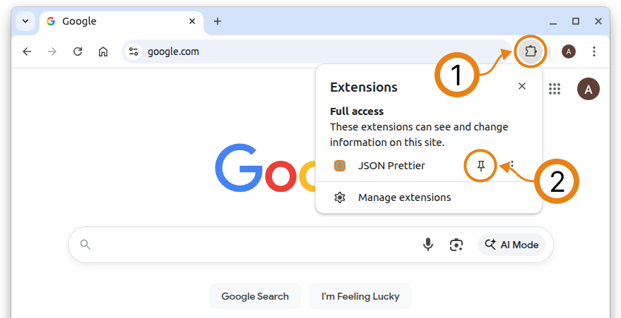
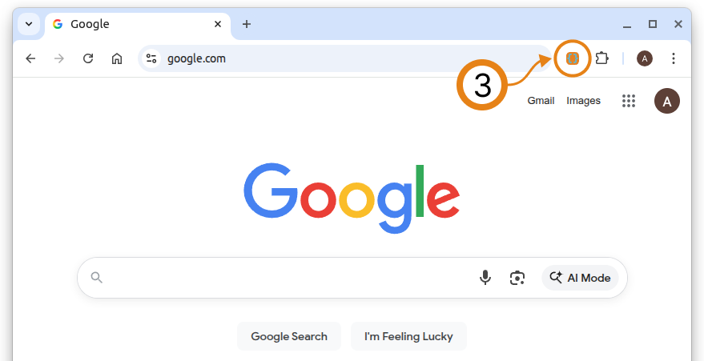

Get started in 3 quick steps
1
Open the Extensions menu
Click the puzzle icon in the top-right corner of Chrome to see your installed extensions.
2
Pin JSON Prettier to the toolbar
In the Extensions list, find JSON Prettier and click the pin icon so it stays visible on your toolbar.

3
Open JSON Prettier on any page
Click the JSON Prettier icon on the toolbar to open the extension on any page and create a new JSON file to edit.

What you can do with the toolbar icon
- Automatic formatting: When you open a JSON file in Chrome, JSON Prettier automatically formats and displays it.
- Right-click the icon: Open the extension settings.
- Left-click the icon: Create a new JSON file and edit it in the built-in editor.